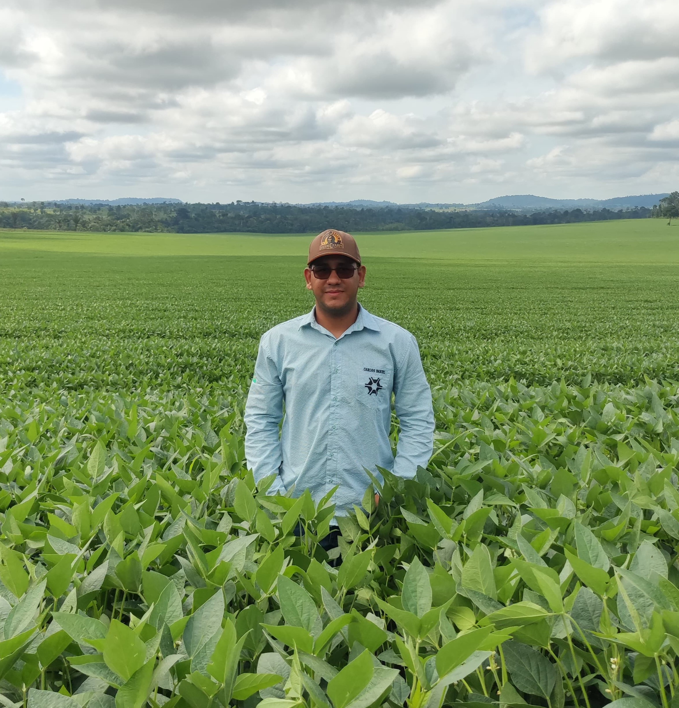

Carlos Daniel Teixeira Silva
Engenheiro Agrônomo🌱
✉️Email: carlosdani16if@gmail.com
📞Telefone: (69)984193695
LinkedIn: https://www.linkedin.com/in/carlos-daniel-066b821a6
Endereço: Ariquemes-RO
Formação acadêmica
Ensino Médio: IFRO Campus Ariquemes;
Curso Técnico em Agropecuária Integrado ao Ensino Médio: IFRO Campus Ariquemes;
Bacharelado em Agronomia: IFRO Campus Ariquemes.
Habilidades
- Conhecimento em práticas agrícolas sustentáveis;
- Experiência em análise de solo e culturas;
- Habilidade em utilizar tecnologias agrícolas modernas, como drones para monitoramento de plantações;
- Fortes habilidades interpessoais e capacidade de trabalho em equipe.
Experiência Profissional
- Estágio em uma fazenda experimental, onde trabalhei com técnicas de cultivo, análise de solo e manejo de culturas;
- Assistente de pesquisa em um laboratório agrícola, ajudando na coleta e análise de dados experimentais;
- Estágio na Agência de Defesa Sanitária Agrosilvopastoril – IDARON;
- Estágio na Casa do Agricultor.
Atividades Extracurriculares
- Apresentação de Projeto de Pesquisa no XXIII Congresso Latino-americano de Ciência do Solo (CLACS)e do XXXVIII Congresso Brasileiro de
Ciência do Solo (CBCS);
- Participei como Coautor de um artigo, onde ele fala sobre ciencia do solo e variabilidade espacial do solo. Sua publicação foi realizada
na revista Research, Society and Developmentonde, onde o mesmo teve como objetivo avaliar os impactos ocorridos na variabilidade espacial dos
atributos de densidade do solo, porosidade total, macro e microporosidade em área que sofreu alteração de floresta em pastagem no vale
do Jamari, RO;
- Participei como coautor em um artigo. O trabalho foi publicado na Revista Valore, onde teve como objetivo caracterizar parâmetros físicos e
químicos com a finalidade de explicar a influência de fragmentos florestais nativos sobre a produção e qualidade da cana-de-açúcar cultivada
próximo aos fragmentos, com o uso da análise multivariada;
- Participei como Coautor em um artigo publicado na Revista Valore, onde o trabalho teve como objetivo avaliar a qualidade do solo pela
metodologia da Cromatografia de Pfeiffer realizando um estudo comparativo com a metodologia convencional de avaliação dos atributos físicos
e químicos em diferentes sistemas de uso do solo no Assentamento Madre Cristina, no município de Ariquemes, RO.
Cursos
- Minicurso - Tecnologia de Aplicação de Produtos Fitossanitários;
- Minicurso - Semeadura e adubação em sistemas integrados;
- curso Tecnologias para Agricultura de Baixo Carbono;
- Curso Sistemas Agroflorestais para pequenas propriedades do semiárido brasileiro;
- Curso Sistema de Plantio Direto;
- Curso Recuperação de Pastagens Degradadas;
- Curso Manejo do Solo com foco em Sistemas Integrados de Produção;
- Curso Introdução a Sistemas Integrados de Lavoura-Pecuária-Floresta;
- Curso Fazendo Certo: A Escolha da Forrageira;
- Curso Tecnologia Pós-Colheita em Frutas e Hortaliças;
- Curso Criação de suínos em família sem o uso coletivo de antimicrobianos;
- Curso Controle biológico: enfoque em manejo de lagartas com bioinseticidas;
- Curso Avaliação Econômica de Sistemas Agropecuários;
- Curso de Irrigação e Drenagem;
- Operação de Drones de Aeronave Aemotamente Pilotada/APR/DRONE;
- Procedimentos Legais para Habilitação e Uso de Drones;
- Drones como Tecnologia de Precisão no Agronegócio.
Objetivo Profissional
Meu objetivo como engenheiro agrônomo é aplicar meus conhecimentos e habilidades para contribuir significativamente para o
desenvolvimento sustentável da agricultura. Busco oportunidades onde eu possa utilizar minhas habilidades técnicas e experiência
prática para aumentar a eficiência e a produtividade das operações agrícolas, ao mesmo tempo em que promovo práticas agrícolas
sustentáveis e ambientalmente responsáveis. Estou comprometido em trabalhar em equipe e em buscar constantemente oportunidades
de aprendizado e crescimento profissional, sempre alcançando os melhores resultados para os clientes e para a comunidade agrícola como um todo.